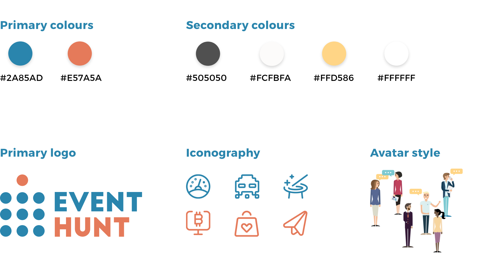
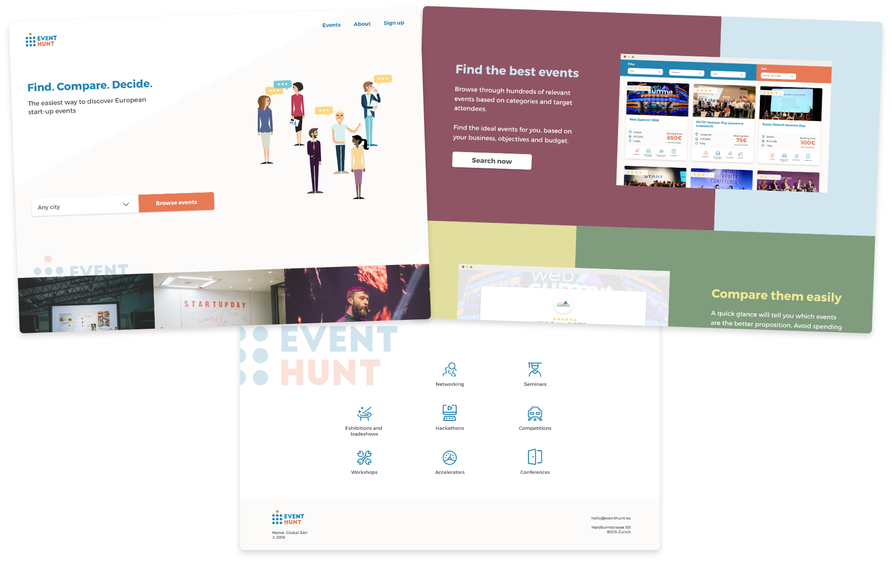
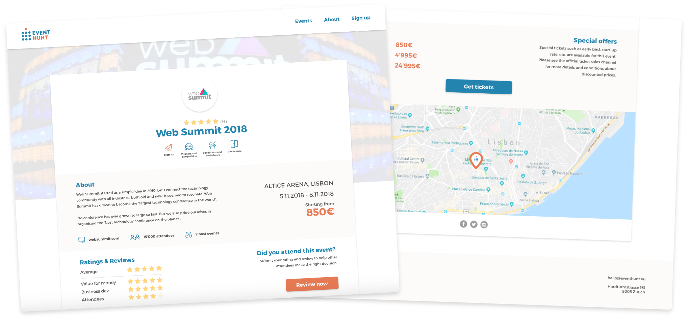

EventHunt takes the risk out of attending start-up events. It lets entrepreneurs rate and review events they attended and helps them find the best ones for networking, finding investors, learning from top keynote speakers… whatever it is that they are looking for. EventHunt is a side-project in its infancy, that I took up to give back to the entrepreneurial community.
| Type | Web application |
|---|---|
| Date | Nov 18’ - Present |
| Scope | UX/UI design & Product owner |
| Contract | Co-founder |
EventHunt is a project by entrepreneurs, for entrepreneurs. It allows me to experiment with execution frameworks and hone my skills, while working on a product that addresses a pain point keenly felt by the start-up community. I design and execute all aspects of the EventHunt web application.
With EventHunt, I opted for a suggestive logo, which can be interpreted in several ways - as a keynote speaker in front of an audience, an attendee joining a crowd at an event or an event calendar hanging by a pin. The two primary colours support these semantic pairs and are prominent throughout the platform design.
With EventHunt, we used Wix to quickly build landing pages, testing the audience’s response to our value proposition and clarity of communication. We also used the landing page to collect initial event reviews through a Typeform survey, further validating the users’ willingness to support the community by sharing their feedback on events they attended. All feedback collected throughout the process was used in designing the platform.
Following a period of prototyping EventHunt in Adobe Xd and usability tests, we began implementation in bubble.is (currently in progress) to retain full control of the product without the need to hire developers. It also allows us to get the MVP to market quickly and keep the iteration cycles as short as possible, building EventHunt in a truly Agile way.
